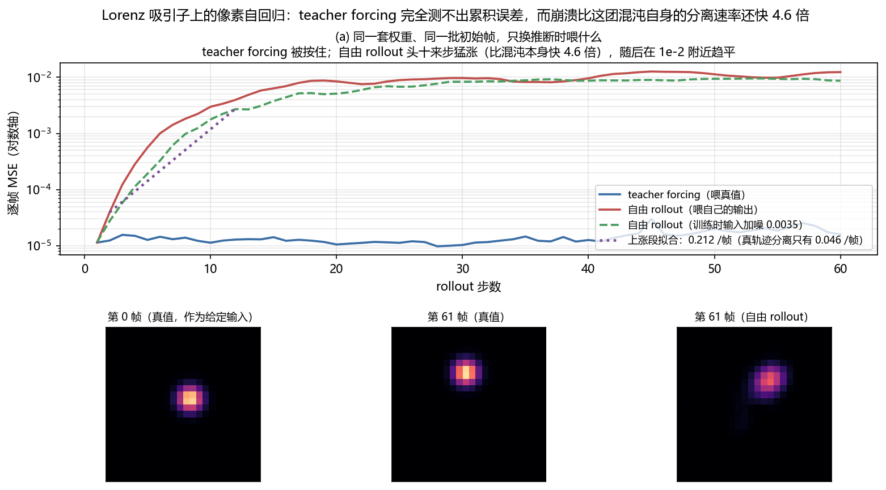

视频生成世界模型 (Video Generation World Models)¶
预计阅读：12 分钟 | 前置知识：了解扩散模型和视频生成基础
范围说明：本篇的"四种能力阶段"来自综述 §5.1 与 Table 2；下面「通用视频世界模型」表不是综述的引用，是本仓库补的知名工作；「无人机视频世界模型」整张表也是本仓库补充——arXiv:2605.00080 全文不含任何无人机内容。文内已逐处标注。
核心思想¶
用视频生成模型作为世界模型的实现——给定当前帧和动作条件，生成未来的视频帧。
四种能力阶段¶
综述 §5.1 把这条线分成四个阶段（Table 2 同此分组）："we organize the literature into four stages of progression: video generation as imagination for policy learning, action-controllable rollout models, structure-aware generation with richer interaction priors, and foundation-scale video backbones adapted into reusable world models."
阶段一：想象式生成 (Imagination-based)¶
从当前帧"想象"未来可能发生什么：
特点： - 多样性：可以生成多种不同的未来 - 创造性：可以"想象"未见过的场景 - 不确定性：每一步都可能有多种结果
阶段二：动作可控的 rollout (Action-Controllable)¶
把动作作为显式条件接进生成过程，生成的是"在这个动作下会发生什么"，而不只是"可能发生什么"。这一步让生成结果能被策略用起来。
阶段三：结构感知生成 (Structure-Aware)¶
在生成里注入更丰富的交互先验（几何、物理、3D 结构），让生成出的未来更符合真实世界约束。
阶段四：基础规模公式化 (Foundation-scale)¶
用大规模预训练的视频生成模型作为通用世界模型：
特点： - 通用性：预训练后可适配多种场景 - 质量：大规模数据带来更好的生成质量 - 成本：需要大量计算和数据
代表模型¶
通用视频世界模型（非综述引用，本仓库补充）¶
| 模型 | 年份 | 核心创新 |
|---|---|---|
| Cosmos (NVIDIA) | 2025 | 大规模视频世界模型（综述只引用了 Cosmos Predict 2.5 (Ali et al., 2025)） |
| Genie (DeepMind) | 2024 | 从视频学习交互式世界（综述未引用原版 Genie，只引了 Genie Envisioner） |
| Sora (OpenAI) | 2024 | 视频生成的里程碑（综述未引用） |
| GAIA-1 (Wayve) | 2023 | 自动驾驶世界模型（综述在 §6.2 驾驶章引用） |
无人机视频世界模型（非综述引用，本仓库补充）¶
| 模型 | 年份 | 核心创新 |
|---|---|---|
| FlightDiffusion | 2025 | 扩散模型生成FPV视频 |
| AirScape | 2025 | 可控相机运动（文本"运动意图"）的航空世界模型 |
| MotionScape | 2026 | 运动分层的无人机视频基准（228 段 / 62,700 帧） |
| Genie Envisioner | 2025 | 机器人视频生成 |
扩散模型作为世界模型¶
基本原理¶
条件生成¶
无人机领域的应用¶
FlightDiffusion¶
论文：FlightDiffusion: Revolutionising Autonomous Drone Training with Diffusion Models Generating FPV Video
核心思路： 1. 从单帧生成多样FPV视频轨迹 2. 同时生成对应的action space 3. 用合成数据训练飞行策略
关键结果： - 位置误差：0.25m (RMSE 0.28m) - 姿态误差：0.19 rad (RMSE 0.24rad) - 仿真和真实无显著差异 (p=0.541) - 成功率：仿真和真实均约62%
范式创新："扩散推理作为统一导航、动作生成和数据合成的范式"
AirScape¶
核心创新： - 专门为航空视角设计的世界模型 - 可控制相机运动参数 - 生成逼真的航空视频序列
视频世界模型的用途¶
1. 数据增强¶
2. 想象训练¶
3. 演示生成¶
4. 安全评估¶
视频世界模型的挑战¶
1. 计算成本高¶
视频生成需要大量计算： - 训练：需要大规模GPU集群 - 推理：单帧生成需要数秒到数分钟
2. 物理一致性¶
生成的视频可能不遵守物理规律： - 物体穿模 - 不合理的运动轨迹 - 光照不一致
3. 长视频一致性¶
多步生成后，视频质量下降： - 累积误差 - 风格漂移 - 时间不一致
4. 无人机特殊挑战¶
- 3D视角变化大
- 快速运动模糊
- 光照变化剧烈
- 需要6-DoF轨迹控制
与世界模型作为模拟器的区别¶
| 维度 | 视频生成世界模型 | 隐空间世界模型 |
|---|---|---|
| 输出 | 像素级视频 | 隐空间表示 |
| 质量 | 视觉上逼真 | 可能不直观 |
| 计算成本 | 高 | 低 |
| 物理一致性 | 可能违反 | 通常更好 |
| 用途 | 数据增强、可视化 | 策略训练、规划 |
动手验证：多步生成的质量是怎么"累积"掉的？¶
「长视频一致性」一节把多步生成后的质量下降归成三条：累积误差、风格漂移、时间不一致。第一条是根子，但它光靠文字说不透——"累积"到底是线性的还是指数的、涨多快、会不会一直涨下去，都不是一眼能看出来的。这一节把一条自回归视频模型的误差曲线量出来。
做法是造一条能自己滚下去的像素序列：一个高斯亮斑沿 Lorenz 吸引子的 (x, y) 投影移动，每帧 24×24 像素、帧间 dt = 0.05。世界模型就是最朴素的像素自回归——看连续两帧、预测下一帧，训练时喂的全是真值帧对（teacher forcing）。训练和推断唯一的差别，是推断时喂的是它自己刚生成的帧。
选 Lorenz 是有意的。第一版让亮斑走正弦轨迹，结果 teacher forcing 和自由 rollout 的误差都是平的——那条轨迹的动力学是稳定的，模型每步重看完整画面就把误差纠了回来。得动力学本身会把邻近轨迹推开，"累积"才会显形。Lorenz 是混沌的，邻近轨迹按 e^(λ₁t) 分离，这个速率可以自己数值量出来，正好当参照。
本节量的是机制，不是某个真实视频模型的指标：24×24 的灰度亮斑、MLP 世界模型、没有纹理也没有光照，与 FlightDiffusion 那类扩散模型的退化形态（风格漂移、闪烁）不是一回事。这里的动力学还是确定的混沌系统，没有随机性成分。
两行输入、一行输出，只差喂什么¶
import numpy as np, torch, torch.nn as nn
torch.manual_seed(0); D, T, DT, H = 24, 64, 0.05, 60 # 画面 24x24、每条 64 帧、帧间 0.05 s
SIG, LO, HI = 1.3, np.array([-20., -28.]), np.array([20., 28.])
def rk4(s, dt): # Lorenz: sigma=10, rho=28, beta=8/3
f = lambda a: np.array([10*(a[1]-a[0]), a[0]*(28-a[2])-a[1], a[0]*a[1]-8/3*a[2]])
k1 = f(s); k2 = f(s+dt/2*k1); k3 = f(s+dt/2*k2)
return s + dt/6*(k1 + 2*k2 + 2*k3 + f(s+dt*k3))
def seqs(n, seed): # 混沌轨迹 -> 高斯亮斑视频，展平成像素向量
rng, g, out = np.random.default_rng(seed), np.arange(D, dtype=float), []
for _ in range(n):
s = rng.normal(0, 8, 3)
for _ in range(4000): s = rk4(s, DT) # 先跑掉瞬态，落到吸引子上
one = []
for _ in range(T):
px, py = 3 + (s[:2]-LO)/(HI-LO)*(D-7) # (x, y) 铺到画布中间
one.append(np.exp(-((g[None,:,None]-px)**2 + (g[None,None,:]-py)**2)/(2*SIG**2)))
s = rk4(s, DT)
out.append(np.stack(one))
return torch.tensor(np.stack(out), dtype=torch.float32).reshape(n, T, -1)
def train(fr, steps=2000): # 训练对全部采自真值序列
m = nn.Sequential(nn.Linear(2*D*D,256), nn.SiLU(), nn.Linear(256,256), nn.SiLU(),
nn.Linear(256,D*D)) # D*D：一帧展平后的像素数
opt, rng = torch.optim.Adam(m.parameters(), lr=2e-3), torch.Generator().manual_seed(1)
cur = torch.cat([fr[:,:-2], fr[:,1:-1]], -1).reshape(-1, 2*D*D); nxt = fr[:,2:].reshape(-1, D*D)
for _ in range(steps):
i = torch.randint(0, cur.shape[0], (64,), generator=rng) # 与完整脚本同一套种子
opt.zero_grad(); (m(cur[i]) - nxt[i]).pow(2).mean().backward(); opt.step()
return m.eval()
@torch.no_grad()
def rollout(m, fr): # 同一套权重跑两遍，只有「喂什么」不同
err_tf, err_free, free = [], [], torch.stack([fr[:,0], fr[:,1]], 1) # 自由 rollout 只能靠自己
for k in range(H):
truth, p = fr[:, k+2], m(torch.cat([free[:,0], free[:,1]], -1)).clamp(0,1)
err_tf.append((m(torch.cat([fr[:,k], fr[:,k+1]], -1)).clamp(0,1) - truth).pow(2).mean(-1))
err_free.append((p - truth).pow(2).mean(-1))
free = torch.stack([free[:,1], p], 1)
return torch.stack(err_tf).mean(1), torch.stack(err_free).mean(1)
tf, free = rollout(train(seqs(64, 0)), seqs(32, 99))
for k in (1, 6, 12, 24, 48, 60):
print(f"第 {k:2d} 步 teacher forcing {tf[k-1]:.2e} 自由 rollout {free[k-1]:.2e}")
rollout 里这两行是本节的全部：err_tf 那行走的是真值帧对 fr[:, k] 和 fr[:, k+1]，err_free 那行走的是 free 里的两帧，而 free 只由模型自己的输出更新。同一个 m、同一个循环，两条曲线从此分道扬镳。
.clamp(0, 1) 是必要的：真实像素生成器的输出有界，不钳的话线性输出头会一路飘到 inf，量到的就成了"数值溢出"而不是"画面崩了"。
本地实测结果¶
真轨迹对的实测分离速率 = 0.0460 /帧（256 对初始点、60 帧上平均，全程在线性区）
每条序列 64 帧，每帧 24x24 = 576 像素；训练 64 条，留出 32 条
rollout 步数 1 6 12 24 48 60
teacher forcing 1.14e-05 1.45e-05 1.29e-05 1.15e-05 1.59e-05 1.59e-05
自由 rollout 1.14e-05 1.01e-03 3.97e-03 8.40e-03 1.24e-02 1.24e-02
自由+输入加噪 1.16e-05 3.29e-04 2.71e-03 6.93e-03 9.14e-03 8.69e-03
teacher forcing 那一行从第 1 步到第 60 步只在 9.77e-06–3.02e-05 之间浮动，不随步数增长——每步都从真值出发，误差没有机会留下来。同一套权重、同一批初始帧，只把"喂真值"换成"喂自己的输出"，第 60 步的误差就变成 1.24e-02，是第 1 步的 1084 倍、同时刻 teacher forcing 的 778 倍。
这个数折算成画面更直观：1.24e-02 的 MSE 相当于亮斑位置偏了 2.7 个像素，而 teacher forcing 的 1.59e-05 只相当于 0.08 个像素。也就是说训练时那个"完美"的读数完全没有预警作用——它盯着的是一条永远不会出错的输入，而推断时喂进去的东西第一帧就已经不对了。
上涨集中在头十来步：第 2→12 步的等效放大速率是 0.212 /帧，比真轨迹之间的 0.046 /帧 快 4.6 倍。这一点值得留意——如果崩溃只是混沌固有的可预报性极限，模型误差该按 0.046 /帧 涨；快出 4.6 倍说明这段塌方主要是模型自己的问题：一旦输入的帧偏离了它训练时见过的分布，网络的外推行为就不受任何约束了。第 12 步之后曲线在 1e-2 附近趋平，画面崩到一个"糊掉"的稳定状态，不是无限发散。
对照组把训练时的输入掺上噪声（DART 的做法，让模型见过不完美的上一帧），扫了三档：
输入噪声 sigma 单步误差 第60步误差 放大速率 /帧
0.0000 1.14e-05 1.24e-02 0.2124
0.0035 1.16e-05 8.69e-03 0.2302
0.0100 2.63e-05 1.66e-02 0.1951
0.0300 9.71e-05 1.89e-02 0.1681
噪声的作用是双向的，而且两个方向都看得见：从 0 加到 0.03，单步误差涨了 8.5 倍，放大速率从 0.212 降到 0.168 /帧（降 21%）——抗扰动这一面确实买到了。但代价先到：第 60 步的总误差反而从 1.24e-02 涨到 1.89e-02，比不加噪还差 1.5 倍。
中间那档 σ = 0.0035 是笔不赚不赔的买卖：单步几乎没动（差 1.02 倍），放大速率略升（0.230 对 0.212），而长程 8.69e-03 反过来比基线的 1.24e-02 低——这一档不要再往下读了，原因见下面的限制说明。
所以想只靠"在输入上撒噪声"压住累积是划不来的：噪声有效的尺度得跟最终偏差相当，可最终偏差 2.7 个像素远大于单步误差 0.06 个像素，等噪声大到那个份上，单步精度早就赔光了。要真正压住累积，得直接对着 rollout 训练。
限制：本节是 24×24 灰度亮斑 + 三层的 MLP，画面里没有纹理、光照、遮挡，这些正是真实视频模型里最先糊掉的东西；这里的"崩"只表现为亮斑错位和重影。Lorenz 轨迹是确定性的，所以曲线里没有随机种子带来的抖动，但也因此没能覆盖扩散模型采样噪声那一类误差源。误差折算成像素用的是单个高斯亮斑的位移-重合度关系，是个等效读数：模型崩掉时不只是位移，还会把亮斑糊开。放大速率 0.212 /帧 是在第 2–12 步上拟合的，第 12 步之后曲线已经趋平，把整段 60 步一起拟合会得到一个小得多的数。
σ = 0.0035 那一档为什么不能读：它不是随机种子那种抖动（本节的轨迹、初始化、批采样全是定死的，同一次设置重跑一定复现），而是它对画布映射范围这类与结论无关的设定敏感。把 (x, y) 到像素的映射范围从"由数据算出"改成"写死成 ±20 / ±28"，其余一切不动，这一档的长程读数就从比基线差 7% 翻成比基线好 30%。同一档在两个稳定复现的设置下给出相反结论，说明这个差别不在该方法本身，而在噪声水平之内。σ = 0.01 与 0.03 两档在两次设置下都稳定地更差，只有它们能当结论。

运行完整脚本¶
完整脚本在 code/m_exposure_bias.py，额外打印真轨迹对的分离速率测量细节（256 对初始点、扰动 1e-8、全程在线性区）、三档噪声的完整扫描表，并输出上面这张图，其中第三格并排给出同一时刻的真值帧与自由 rollout 帧。
延伸阅读¶
- 生成式世界模型 — 无人机生成式世界模型详解
- 关键数据集与基准 — MotionScape等数据集
- FlightDiffusion复现指南 — 动手实践
思考题¶
-
基本理解：视频生成世界模型的核心优势是什么？
-
对比分析：想象式生成和基础规模公式化有什么区别？各适合什么场景？
-
无人机应用：FlightDiffusion如何用扩散模型生成FPV视频？
-
挑战分析：视频世界模型的物理一致性问题如何影响无人机应用？
-
进阶思考：如何保证生成的视频既视觉逼真又物理正确？